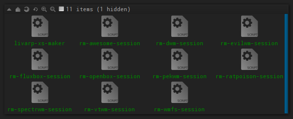
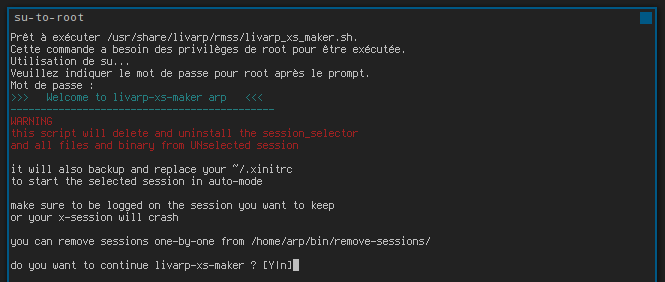
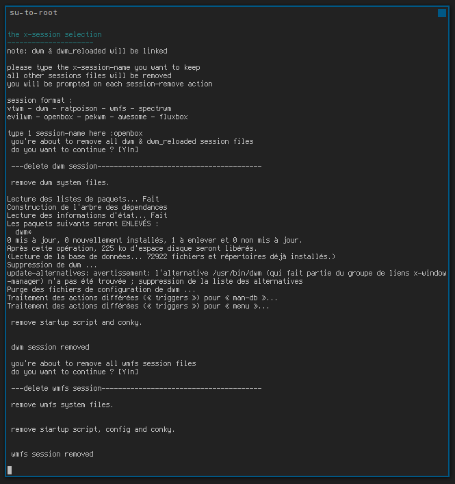

lang fr|gb

gestion des sessions
ajouter, enlever, désinstaller, masquer les sessions, méthode manuelle, sélective ou complète, voici quelques outils pour gérer vos sessions.
méthode manuelle
note: si vous désirez obtenir un livarp mono-session sans désinstaller/effacer quoique ce soit, utilisez plutôt ~/.xinitrc. visitez la page dédiée.
si vous désirez ajouter ou supprimer une session “manuellement”, il faut installer ou désinstaller les paquets et dossiers de configuration ainsi qu'ajouter ou effacer l'entrée dans le session-selector (/usr/local/bin/dmenu-start.sh).
notez que les wms présents dans livarp sont très légers et n'encombrent pas trop votre disque.
- pour supprimer l'affichage d'une session, éditez le session-selector en root:
# vim /usr/local/bin/dmenu-start.sh
puis effacer le(s) entrée(s) concernée(s) dans la "session list" puis dans "session launchers".
- pour ajouter une session, editez le session-selector de la même façon que précédement puis ajouter la session désirée dans la "session list" puis dans "session launchers" et assurez-vous de mettre à jour les numéro de session.
ici un exemple avec une session snapwm:
le script d'origine dmenu-start.sh
#!/bin/bash
# a simple session-selector
###########################
# session list
# ------------
choice=`echo -e "01: vtwm\n02: dwm\n03: ratpoison\n04: wmfs\n05: dwm_reloaded\n06: spectrwm\n07: evilwm\n08: openbox\n09: pekwm\n10: awesome\n11: fluxbox\n12: scripts de lancement\n13: eteindre" | dmenu -fn "snap" -nb "#222222" -nf "#7D7D7D" -sb "#005885" -sf "#D7D7D7" -p "choisir ou editer une session:" | cut -d ':' -f 1`
# session launchers
# -----------------
case $choice in
01) exec $HOME/bin/start/vtwm_start.sh ;;
02) exec /usr/bin/dwm ;;
03) exec $HOME/bin/start/ratpoison_start.sh ;;
04) exec $HOME/bin/start/wmfs_start.sh ;;
05) exec $HOME/bin/start/dwm_start.sh ;;
06) exec $HOME/bin/start/spectrwm_start.sh ;;
07) exec $HOME/bin/start/evilwm_start.sh ;;
08) exec /usr/bin/openbox-session ;;
09) exec $HOME/bin/start/pekwm_start.sh ;;
10) exec $HOME/bin/start/awesome_start.sh ;;
11) exec $HOME/bin/start/fluxbox_start.sh ;;
12) geany -s bin/start/*_start.sh .config/openbox/autostart .xinitrc; dmenu-start.sh ;;
13) sudo shutdown -h now ;;
*) dmenu-start.sh ;;
esac
exit 0
le script modifié avec snapwm placé entre "dwm_reloaded" et "spectrwm"
#!/bin/bash
# a simple session-selector
###########################
# session list
# ------------
choice=`echo -e "01: vtwm\n02: dwm\n03: ratpoison\n04: wmfs\n05: dwm_reloaded\n06: snapwm\n07: spectrwm\n08: evilwm\n09: openbox\n10: pekwm\n11: awesome\n12: fluxbox\n13: scripts de lancement\n14: eteindre" | dmenu -fn "snap" -nb "#222222" -nf "#7D7D7D" -sb "#005885" -sf "#D7D7D7" -p "choisir ou editer une session:" | cut -d ':' -f 1`
# session launchers
# -----------------
case $choice in
01) exec $HOME/bin/start/vtwm_start.sh ;;
02) exec /usr/bin/dwm ;;
03) exec $HOME/bin/start/ratpoison_start.sh ;;
04) exec $HOME/bin/start/wmfs_start.sh ;;
05) exec $HOME/bin/start/dwm_start.sh ;;
06) exec $HOME/bin/start/snapwm_start.sh ;;
07) exec $HOME/bin/start/spectrwm_start.sh ;;
08) exec $HOME/bin/start/evilwm_start.sh ;;
09) exec /usr/bin/openbox-session ;;
10) exec $HOME/bin/start/pekwm_start.sh ;;
11) exec $HOME/bin/start/awesome_start.sh ;;
12) exec $HOME/bin/start/fluxbox_start.sh ;;
13) geany -s bin/start/*_start.sh .config/openbox/autostart .xinitrc; dmenu-start.sh ;;
14) sudo shutdown -h now ;;
*) dmenu-start.sh ;;
esac
exit 0
il ne vous reste plus qu'à configurer votre session snapwm depuis votre ~/bin/start/snapwm_start.sh.
méthode sélective
livarp dispose d'une série de script situé dans votre dossier ~/bin/remove-sessions permettant la désinstallation des sessions du livarp une par une.
ATTENTION: ces script utilisent les droits administrateurs et suppriment les fichiers et exécutables séclectionnés. les modifications sont définitives.

notez qu'il faudra éditer le script /usr/local/bin/dmenu-start.sh afin d'éliminer les entrées des sessions que vous avez effacé.
méthode complète
livarp dispose d'un script qui permet d'éliminer toutes les sessions sauf une, transformant ainsi votre livarp en livarp-xs: le livarp-xs-maker.
ATTENTION: ce script s'exécute en root et supprime l'intégralité des fichiers et dossiers système/utilisateur des sessions nonsélectionnées. les modifications sont définitives.
ATTENTION: assurez-vous de vous connecter dans la session que vous désirez garder pour lancer livarp-xs-maker.
livarp-xs-maker se lance depuis les différents menus du livarp: section système. ou depuis le dossier /bin/remove-sessions/livarp-xs-maker.
le mot de passe administrateur vous sera demandé, puis une fenêtre de dialogue vous permettra de choisir la session que vous désirez conserver.
vous pourrez suivre le processus dans la fenêtre de terminal:


lors de votre prochaine connexion, la session graphique sélectionnée se lancera automatiquement. bienvenue dans livarp-xs :)